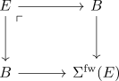
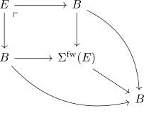
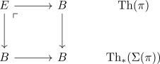

pointed thom space of the suspension equivalent to thom space
Proposition
Let $\pi: E \rightarrow B$ be a spherical fibration classified by $B \rightarrow BF(D)$. Let $\Sigma(d)$ be the pointed spherical fibration via the suspension suspension of spherical fibrations
Then the Thom Space and pointed Thom space
\begin{align*}
\mathrm{Th}_*(\Sigma(\pi)) \simeq \mathrm{Th}(\pi)
\end{align*}
are canonically equivalent
Proof
Let $\Sigma^{\mathrm{fw}}(E)$ be the total space of $\Sigma(\pi)$ (here the fibres are suspended). Then it remains to show that $\Sigma^{\mathrm{fw}}(E)$ is given as pushout

where the right map is the section.
Then it follows by infinity pushout and cofiber that the thom spaces are equivalent.
Consider the square as pushout in the infinity slice category over $B$

By the
